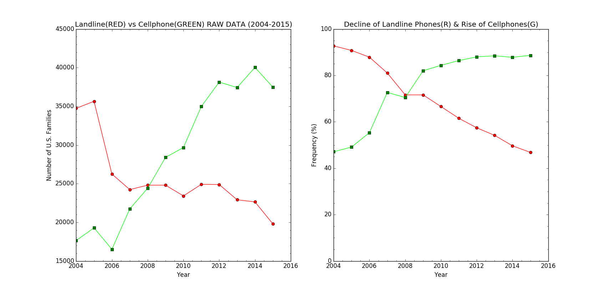

Portfolio
These are my deliverables from PLTW's AP CSP Training at Cal Poly Pomona.
Visual Data

Our client wanted to know how do landline and cellphone usages in U.S. households compare from the last 10 years. We gathered data from the CDC's National Health Interview Survey and consolidated it into a .csv file attached above. We then used Python's capabilities to create a visualization of the number of families who had working landline phones and cellphones from 2004 to 2015. We understood that the graph of raw values is not the best representation to examine trends because the number of families surveyed from year to year varied. Therefore, we created a second graph with two frequency lines. The red one compares the percentage of families with working landline phones across time. The green line compares the percentage of families with working cellphones across time.